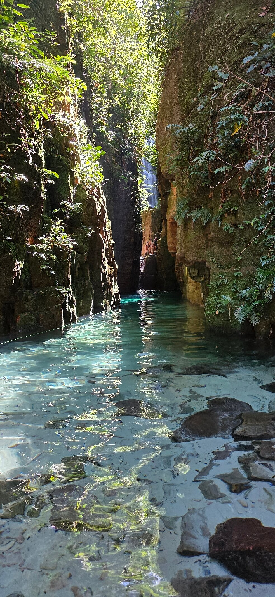

Conheça o lugar

O Cânion do Cipó é uma das formações geológicas mais impressionantes e imponentes localizadas no entorno de Barra do Garças, representando a grandiosidade esculpida pela força do tempo e da água. Esta monumental garganta de pedra atrai geólogos, ecoturistas e aventureiros de todas as partes, ávidos por contemplar paredões verticais que contam a história da Terra através de suas camadas. A jornada até o cânion é uma aventura por si só, exigindo dos visitantes caminhadas por trilhas que desafiam a gravidade em alguns trechos e demandam calçados apropriados e boa disposição física. O esforço, contudo, é amplamente recompensado à medida que a trilha se estreita e os enormes paredões rochosos começam a se erguer imponentes de ambos os lados do caminhante. A vegetação que se desenvolve no interior do Cânion do Cipó possui características únicas, adaptada ao microclima sombreado e úmido criado pela menor incidência direta de raios solares durante o dia. Samambaias gigantes, briófitas e orquídeas raras brotam diretamente das fendas das rochas, criando jardins verticais de beleza cênica inigualável e de grande valor botânico. No fundo do cânion, um riacho de águas extremamente límpidas corre calmamente sobre um leito de pedras polidas, funcionando como o arquiteto silencioso que continua a moldar a rocha ano após ano. Em diversos pontos do percurso, o curso d'água forma pequenas quedas e poços profundos, ideais para um banho refrescante que alivia o calor da caminhada.
A acústica no interior do cânion é fantástica, amplificando o som da água corrente e o canto dos pássaros de uma forma que gera uma sensação de reverência diante da grandiosidade da natureza. O eco das vozes dos visitantes serve como um lembrete constante da escala monumental daquele espaço em comparação com a presença humana. Para os praticantes de esportes de aventura, como o cascading (rapel em cachoeiras) e o trekking de exploração, o Cânion do Cipó oferece desafios técnicos de nível moderado a avançado. A descida de seus paredões exige o acompanhamento de guias credenciados e o uso de equipamentos de segurança homologados, garantindo a integridade dos aventureiros. A luz solar penetra no cânion de forma dramática em horários específicos do dia, geralmente por volta do meio-dia, criando feixes luminosos que cortam a penumbra e iluminam as águas do riacho. Esse fenômeno óptico proporciona um espetáculo visual muito procurado por fotógrafos, que conseguem capturar imagens com contrastes intensos e atmosfera quase mística. A preservação geológica e ambiental do Cânion do Cipó é monitorada de perto por órgãos ambientais, dado o valor científico de suas rochas sedimentares e a fragilidade do ecossistema que ali habita. Os visitantes são orientados a seguir rigorosamente o princípio do "impacto zero", transportando de volta todo o lixo produzido e evitando pichar ou danificar as pedras.
A fauna do cânion inclui espécies de aves de rapina que utilizam o topo dos paredões inacessíveis como locais seguros para construir seus ninhos e observar suas presas na planície abaixo. Olhar para cima e ver gaviões ou urubus-de-cabeça-preta planando suavemente entre as fendas de pedra é uma visão comum que reforça o aspecto selvagem do local. O Cânion do Cipó também carrega uma forte carga de mistério e lendas locais, muitas vezes associadas às histórias da Serra do Roncador e às antigas civilizações indígenas que habitaram a região. Alguns acreditam que as formações rochosas guardam portais energéticos, atraindo esotéricos que buscam meditar no silêncio profundo e protetor de suas gargantas de pedra. O turismo nesta atração requer planejamento prévio, especialmente em relação ao período de chuvas na cabeceira dos rios, fenômeno que pode causar a elevação rápida e perigosa do nível da água. Por isso, a consulta a agências de turismo locais e o monitoramento meteorológico são passos indispensáveis para uma exploração segura e prazerosa do cânion. Concluindo, o Cânion do Cipó firma-se como um destino magistral em Barra do Garças, ideal para quem busca superar limites físicos e se maravilhar com a força monumental da geologia. É um lugar onde a pequenez humana diante do tempo geológico torna-se evidente, inspirando respeito, contemplação e um profundo amor pelas belezas naturais mais brutas e intocadas do Brasil.
As condições de acesso, funcionamento, valores e regras podem mudar. Confirme as informações com responsáveis ou órgãos locais antes de realizar o passeio.